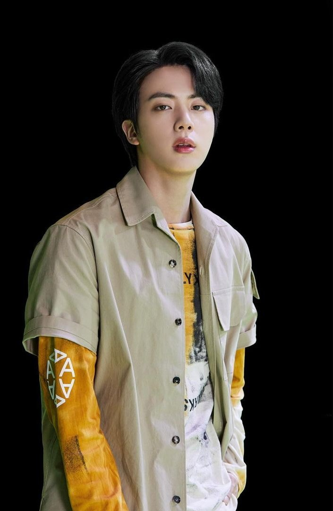
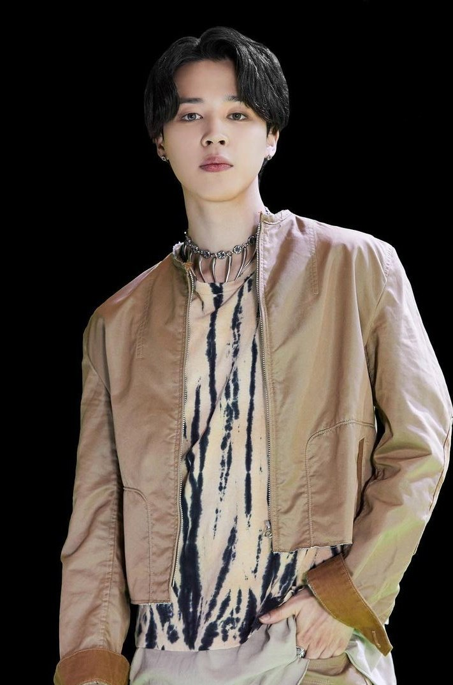
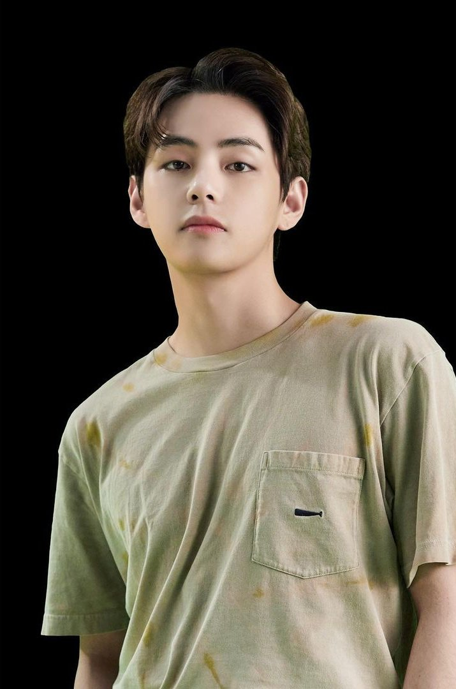
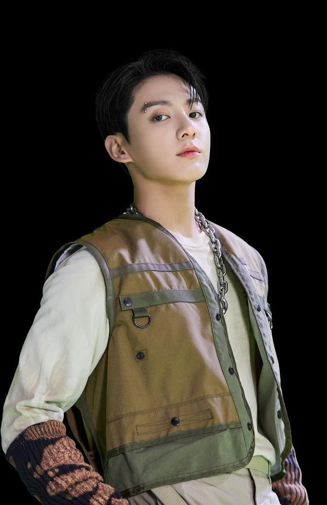
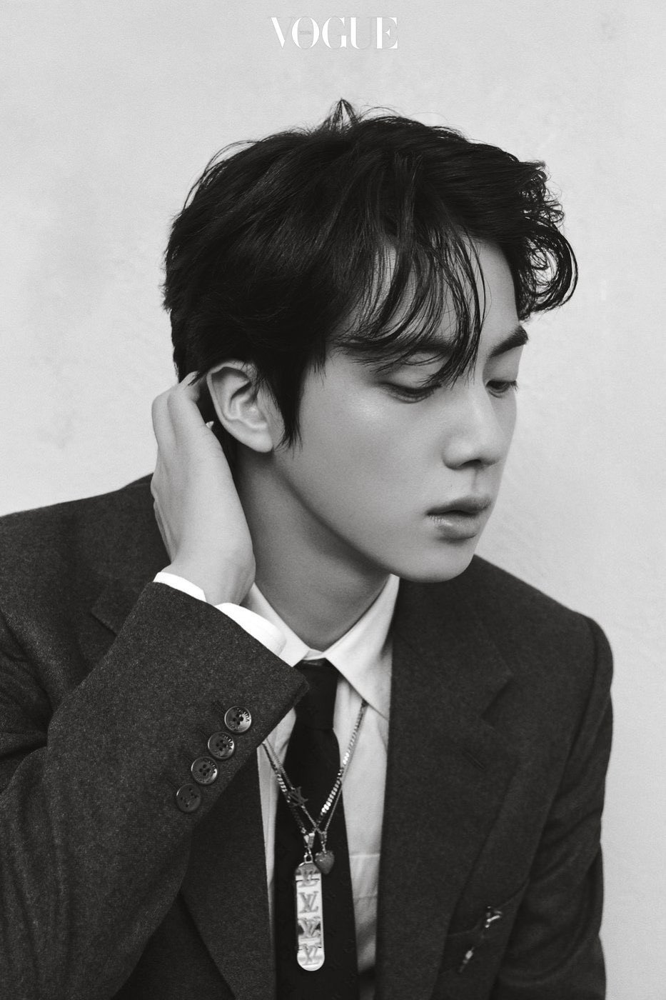
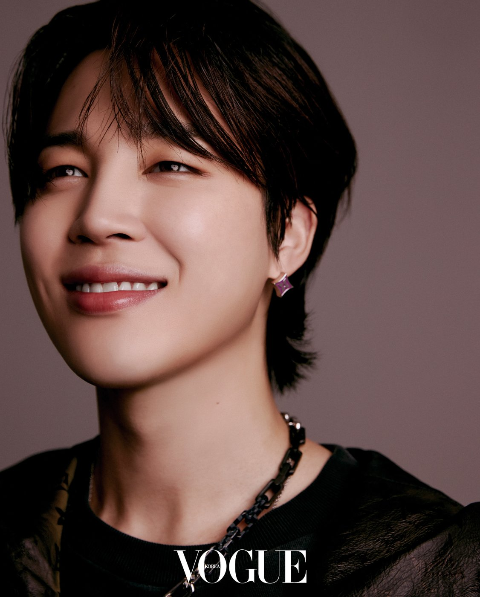
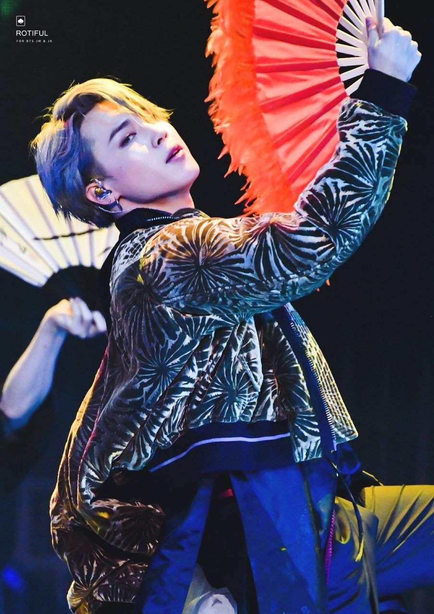
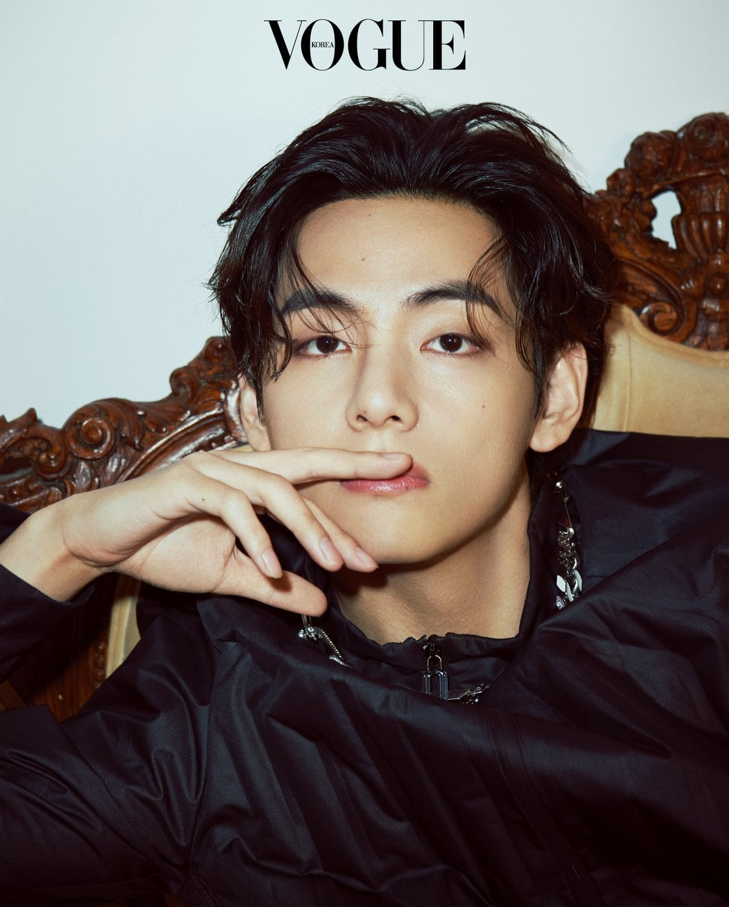
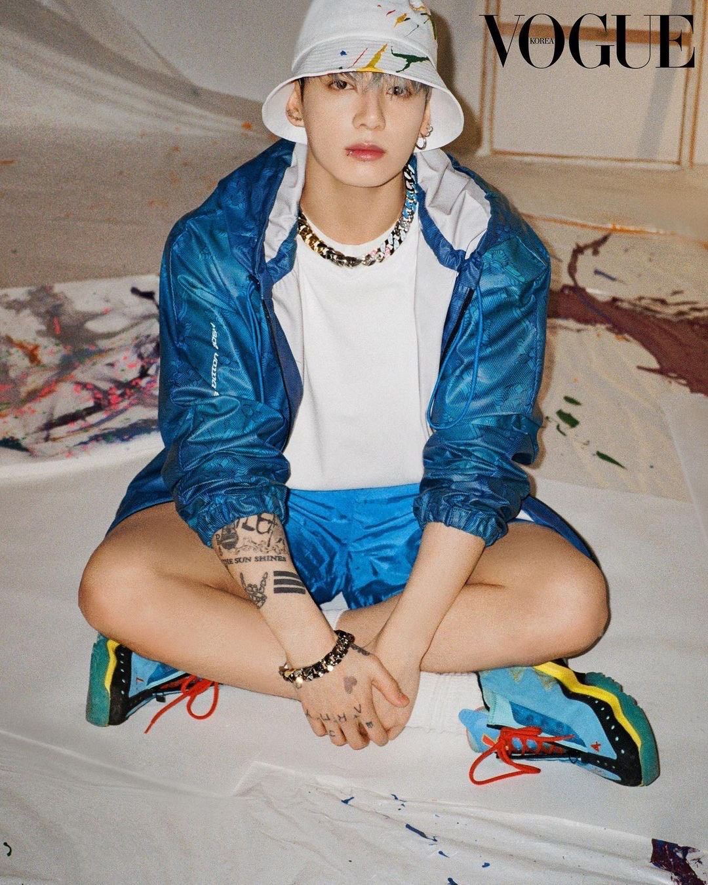

BTS' vocal line consists of members Jin, Jimin, V and Jungkook. The group, which initially was Hip-Hop and Rap centric, over time has broadened their discography to include more genres.
Hence, the four vocalists over time have each found a specific singing style that can cater to their broad range of songs.




Jin's forte is in emotional ballads given his broad vocal range, while Jimin's strength lies in pop songs that compliment his trained dancing abilities. Jungkook, on the other hand, produces and gravitates towards songs that fall under the R&B category, and lastly V's voice lends itself best to his personal favorite genre that is Jazz.
Jin (Kim Seok-jin)

Born 4th December, 1992, Jin was
studying to be an actor in college when he was unexpectedly scouted by BigHit (BTS' agency).
As the only member with no prior vocal or dancing training, Jin has often stated that he
struggled the most with having to adapt to the group's very high dance and vocal
standards. However, after rigorous effort (often starting practice before the rest) Jin has
proved his singing abilities especially with his solo songs like Epiphany and Moon.
Jin is also known for his sense of humor. Despite being the eldest member, he enjoys being in charge of
lightening the atmosphere, stating that he doesn't take life too seriously. He likes to game (Maple Story being his favorite)
and enjoys fishing as well!
Fun fact: Jin released a song on his birthday last year called Super Tuna in dedication of his love for fishing.
I highly reccommend checking it out. It's been dubbed the "Baby Shark of 2021".
Jimin (Park Ji-min)

Born 13th October, 1995, Jimin trained in contemporary dance as a teenager.
Upon being urged by his dance teachers to audition, Jimin became a trainee with BigHit Entertainment.
Jimin had the shortest training period among the seven. Despite that, he has become not only one
of BTS' best singers, with his unique falsetto, but has been known to be one of the best Korean dancers of his generation. He was even awarded the Plaque of Appreciation
by a Korean Fan Dance Conservation Society, becoming the first person in K-Pop history to be awarded three national awards.

Jimin is one of the most charasmatic, sensitive and caring members of the group. While he is extremely empathetic and kind to his team mates, he
is known for being notoriously hard on himself. A perfectionist when it comes to his singing and dancing, his members have often revealed that
he spends hours after group practice and concerts honing his skills.
Fun fact: Jimin's first self-composed track "Promise" released in December 2018 on Soundcloud has gone on to become
the most streamed song on the platform.
V (Kim Tae-hyung)

Born 30th December, 1995, V was BTS' secret member until the group debuted. Not having featured in any pictures or videos revealed prior to the official announce of
the group's lineup, V was deemed the group's hidden weapon. Having never intended to pursue a career in music, V accompanied a friend who was auditioning to join BigHit Labels.
V, however, ended up making the cut instead of his friend. With his soulful voice as a baritone and captivating stage presence, he quickly went on to become one of
the most popular members of the group. As a fan of Jazz, V has incorporated the genre into many of his solo songs like Snow Flower and Christmas Tree.
V is known to be an extremely friendly, outgoing and social person, often considered the social butterfly of the group. He currently has self-composed, written and sung OSTs (Original Sound Tracks)
Sweet Night and Christmas Tree for two K-Dramas starring two of his closest friends. The songs have gone on to break many records and have been highly critically acclaimed.
Fun fact: V is the only member of BTS to have starred in a K-Drama. He had a supporting role in Hwarang, a 2016 historical drama.
Jungkook (Jeon Jung-kook)

Born 1st September, 1997, Jungkook is BTS' youngest member. Famously dubbed as the "Golden Maknae", which means the tremendously talented youngest (Maknae in Korean) member,
Jungkook is considered the all-rounder of BTS. At age 13, Jungkook auditioned for a reality show. Despite not winning, he caught the attention of many talent agencies including
BigHit. He eventually chose BigHit after being impressed seeing RM (his future group member) perform. Jungkook eventually debuted at age 16 and went on to become the main-vocalist
of the group. With his singing, dancing abilities and incredible stage presence, Jungkook has become the "center" of the group, usually having the most lines and being in the middle of
dance formations.
Despite being in the spotlight for many years, Jungkook still considers himself to be a shy person. His down-to-earth, grounded and confident nature is in sharp contrast to the assumptions
people have of those who have received fame growing up.
Fun fact: Jungkook has directed a BTS music video himself. In 2020, he made his directorial debut with the music video for Life Goes On.